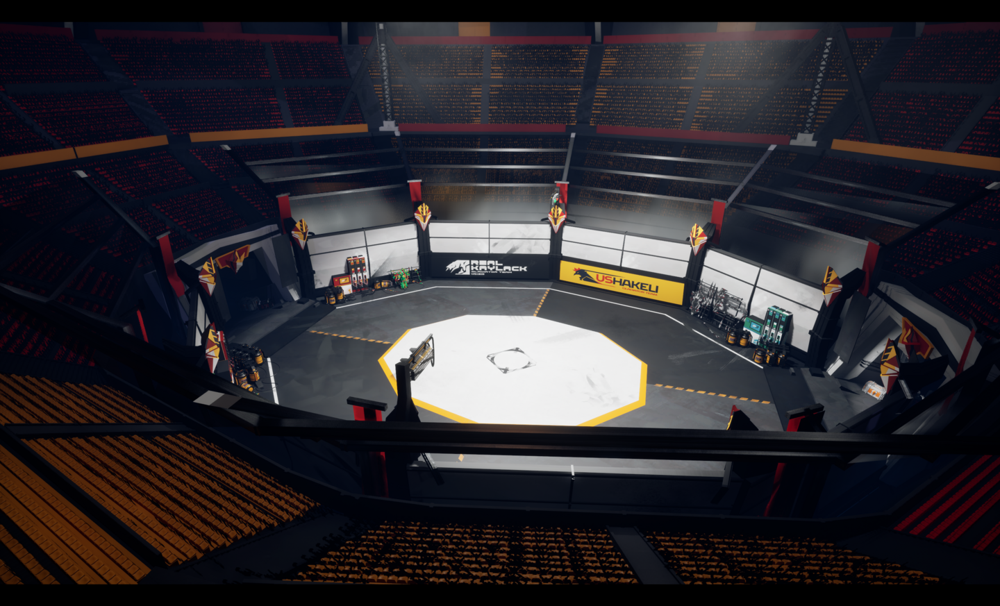

No revive, just revs
Добро пожаловать на арену!
Будущее механической расы. Их общество достигло такого уровня развития, что праздность осталась в прошлом — теперь всё существование вращается вокруг одного вызова: проверить себя на прочность гранью смерти.
NRJR — крупнейшее аренное соревнование среди машин. Главный приз — новейший двигатель мощностью со сверхновую звезду. Мечта любого меха. Но за обладание ею придётся пожертвовать буквально всем. Поражение на этой арене не оставляет от неудачника ничего, кроме карты памяти.
Не знаете, как расшифровывается аббревиатура «NRJR»? Никаких возрождений!
Подать заявку в гладиаторы!
Путь вверх
Молодых мехов с огромными амбициями и раздутым самомнением немало. Но далеко не каждый готов прийти на NRJR, чтобы испытать судьбу. Новенький, ещё блестящий гладиатор под номером 37 вынужден начинать с низов. Бой за боем его детали будут становиться лучше, схемы сложнее и дороже. Однако путь наверх никогда не бывает простым: победа сменяется проигрышем, потеря корпуса мучительной сборкой себя по кускам, новый выход на арену и снова падение на самое дно.
Арена NRJR

Арена NRJR